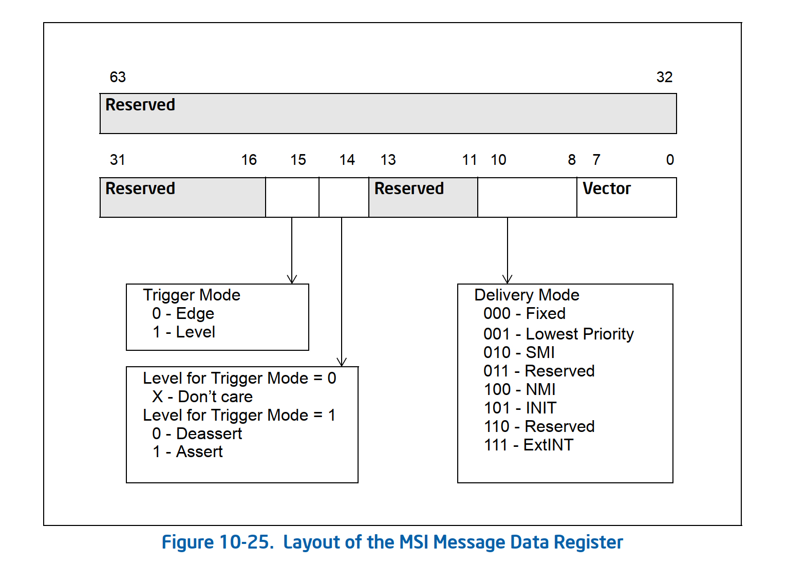

序言
iommu系列二主要介绍了dma remapping的工作原理，这一篇我们来介绍一下iommu 中断重映射的feature在虚拟化场景和非虚拟化场景下是如何工作的。
底层硬件工作原理
谈到中断大家可能不太会直接联想到iommu这个硬件，而事实上在虚拟化未出现之前中断的处理确实不需要iommu的参与。interrupt remapping of iommu的引入主要是为了解决虚拟化场景直通设备的中断投递问题，由于iommu的最重要的功能是dma处理，因此在interrupt remapping enable的情况下，系统当中所有以message signal 的形式来触发的中断都是需要iommu来处理的。或者有人会问为什么是message singal interrupt(msi 或者msix)呢？因为所有的msi中断最底层的实现方式是往特定的地址(0xFEEX_XXXXh)触发一个dma write操作，iommu也是通过0xFEE 这个prefix来判断某个dma write 是否是一个中断请求。引入了iommu之后，系统当中pcie或者pci设备，ioapic，hpet(有些平台hpet是支持msi中断的)等这些设备的msi or msix中断请求都会经过iommu进行处理。
为了让大家更好的理解interrupt remapping的工作机制，我们对比一下相关设备在remapping和非remapping这两种模式下的中断投递和处理方式(这两种方式的对比都是在系统引入了iommu的背景下)。首先介绍一下ioapic，ioapic在系统硬件架构当中所处的位置如图1所示：
接着我们看一下在interrupt remapping enable的场景下，ioapic的redirection table entry的格式是什么样的。
通过图2和图3的对比我们能够看到一些不一样的地方，这里我们总结一下RTE在interrupt remapping 模式下新引入的一些字段说明：
- bits 49:63 对应的是interrupt_index[14:0]，bit 11对应的是interrup_index[15] 即第15位，关于这个16bits的interrupt_index后面会详细说明
- bit 48表示是否为remapping的中断格式，所以必须要置1
- bits 10:8 表示SHV(SubHandle Valid)，强制设置为000b表示SHV不可用。关于SHV后面也会讲到 至于其他两种模式都有的字段比如vector, Trigger Mode, delivery status等需要对齐。
下面我来看一下pci或者pcie设备的msi or msix 中断在两种模式的差异点，先来看一下非remapping模式下message address 和message data的format。

图4和图5呈现的是在非remapping模式下msi的address和data的相关field，下面我们重点来看一下remapping模式下的address和data。
对照图6还是总结一下在remapping模式下的不同点：
- address register bit 4需要置为1，表示为interrupt remapping模式。
- adress register bit 3 表示的是SubHandle Valid(SHV)，这里强制为1即SubHandle是有效的。
- address register bits 19:5 表示的是interrupt_index的0~14位，bit 2表示的是interrupt_index的第15位。这里的interrup_index指的是Interrupt Remapping Table Entry(IRTE) 它里面存储的是interrupt 请求的具体内容。通常情况下pci或者pcie设备一般都会使能多个这里以N来代替中断vector，也就意味着我们要为这个N 个vector分配N个连续的IRTE enteries。这里的interrup_index指的是第一个 IRTE entry，因为SHV是enable的所以后面的N-1个连续的IRTE entries是通过base的interrupt_index加上这个subhandle来寻址的。
- 第一个 IRTE entry的data register 全部设置为0，后N-1的IRTE的data register bits 15:0 设置为subhandle。
上面讲了IRTE，讲了SHV，讲了interrupt_index，讲了subhandle，这些概念之间有什么关联？iommu硬件又是怎么使用这些信息的呢？要回答好这些问题我们还是要从最底层来看，先来看一下在interrupt remapping模式下以iommu视角看到的message signal interrupt request是什么样子的？

if (SHV == 0) {
irte_index = address.handle;
} else {
irte_index = address.handle + subhandle
}
这个HANDLE等价于图6当中的interrupt_index。找到相应的irte index之后，iommu硬件就会结合相关的信息把中断delivery到相应的cpu上，具体的irte的格式如下：
正常情况下iommu硬件是能够兼容interrupt remapping和非remapping这两中断请求的，下面看一下非remapping模式下的中断请求的格式。

- iommu硬件通过0xFEE来确认到来的dma写请求是不是一个中断请求。
- 如果interrupt remapping没有enable(IRES 字段在Global Status Register没有置上)，则中断按照Compatibility Format interrupt request来处理。
- 如果interrupt remapping enable了即IRES在Global Status Register置位，那么中断具体处理流程如下：
- 如果interrupt request 是compatibility format则具体处理如下：
- 如果Extended interrupt Mode enable(Interrupt Remapping Table Address register 的EIME 字段被置上)或者Compatibility format interrupts 被disabled(Global Status register的CFIS被clear)则这个中断请求将会被block；如果上述两个条件都不成立则中断将会pass through即bypass remapping。
- 如果interrupt request 是 remapping 格式则处理流程如下：
- 首先检查reserved 字段是否为0，如果不为0则中断请求被block；如果为0则source-id, Handle, SHV，Subhandle将被解析出来
- 根据解析出来的相关信息计算irte_index，如果irte_index大于interrupt remapping tables size则中断请求被block
- 如果irte_index是一个在正常范围内的值则从interrupt remapping table或者从interrupt Entry Cache里面获取相对应的IRTE。
- 如果IRTE存在，则iommu硬件还需要确认SVT, SID, SQ这些字段是否正确。
- 如果IRTE的Mode field clear(即IM=0，如果IM=1则表示这个中断是post interrupt，关于pi我们下一篇再细讲)
- iommu 硬件根据interrupt remapping 格式对IRTE进行解析，如果发现某些filed异常则该中断被block
- 如果interrupt request 是compatibility format则具体处理如下：
讲完了这些大家可能已经理解中断remapping是怎么一回事了，这个feature的重点就在remapping上。为什么要remapping呢？首先，通过上面的分析大家也都应该知道在非虚拟化的场景下相关设备的中断处理一定是不需要remapping的，正如前面的行文所说有个CFIS field来决定在中断remapping 功能enable的情况下如果CFIS set则就可以处理Compatibility format interrupts，具体描述如下：

从上面的解释可以看到在interrupt remapping enabled的场景下，CFIS只有在x2apic disabled的情况下它才能起效果。但是目前主流的x86的服务器x2apic都是打开的，也就是说CFIS就是这个摆设根本用不起来。所以只要是iommu打开的场景下，相关设备的msi or msix中断一定是走中断remapping的(即使你的设备并不是直通给vm的)，无形中降低了中断的处理效率。从这一点也能说明intel在设计interrup remapping的时候考虑的并不是很全面。
我们接着说虚拟化场景，如果你想把pci or pcie设备直通给虚拟机则中断remapping是必须的，原因其实也很简单：因为pcie设备在host上使能的时候其原生驱动会为其分配中断irq，那么当其直通到vm里面的时候guest os会再一次为其分配中断irq，那这两者如果要关联起来只能通过中断remapping的方式。
OS层代码实现
interrupt remapping初始化
中断 remapping feature的初始化是从enable_IR_x2apic 这个函数开始的，具体如下
void __init enable_IR_x2apic(void)
{
unsigned long flags;
int ret, ir_stat;
if (skip_ioapic_setup)
return;
ir_stat = irq_remapping_prepare();
if (ir_stat < 0 && !x2apic_supported())
return;
ret = save_ioapic_entries();
if (ret) {
pr_info("Saving IO-APIC state failed: %d\n", ret);
return;
}
local_irq_save(flags);
legacy_pic->mask_all();
mask_ioapic_entries();
/* If irq_remapping_prepare() succeeded, try to enable it */
if (ir_stat >= 0)
ir_stat = try_to_enable_IR();
/* ir_stat contains the remap mode or an error code */
try_to_enable_x2apic(ir_stat);
if (ir_stat < 0)
restore_ioapic_entries();
legacy_pic->restore_mask();
local_irq_restore(flags);
}
先说一下irq_remapping_prepare，其核心逻辑调用intel_irq_remap_os 的prepare即intel_prepare_irq_remapping函数，接下来我们看一下这个函数的具体实现逻辑。首先会去解析dmar_table如果大家读过iommu初始化那篇文章应该是有所了解，接着会通过dmar的flag来判断是否支持interrup remapping，具体见下图中flag示意


然后如果系统支持x2apic则通过dmar table flag的Flags的bit 1来判断iommu硬件是否enable了x2apic(注如果这个bit被清0则表示enable了)，接着遍历所有的iommu硬件通过检测图12当中的cap regsiter的EIM field是否为0(为0则表示只支持xAPIC，为1则表示直接x2APIC)，如果有一个iommu硬件cap不支持EIM，则整个eim_mod也会设置为false。接下来才开始进入真正的核心逻辑
for_each_iommu(iommu, drhd) {
if (intel_setup_irq_remapping(iommu)) {
pr_err("Failed to setup irq remapping for %s\n",
iommu->name);
goto error;
}
}
从上面可以看到它会为每个iommu硬件来创建irq_remapping相关的信息，具体还是要分析一下intel_setup_irq_remapping这个函数。首先为每个iommu分配ir_table结构，接着创建1M大小的中断remapping table，接着创建bitmap主要是用它来管理table当中有哪些irte可用，然后再创建ir_domain和ir_msi_domain这两类中断domain，linux当中的irq domain是一个树形结构具体关系如下
x86_vector_domain ---- 父亲
|
|
ir_domain -------- 儿子
|
|
ir_msi_domain -------孙子
接下来通过iommu_set_irq_remapping 这个函数来设置irte table的基地址
addr = virt_to_phys((void *)iommu->ir_table->base);
raw_spin_lock_irqsave(&iommu->register_lock, flags);
//将ir table的基地址写到IRTA寄存器
dmar_writeq(iommu->reg + DMAR_IRTA_REG,
(addr) | IR_X2APIC_MODE(mode) | INTR_REMAP_TABLE_REG_SIZE);
//这一步的作用主是通知硬件去更新irte table的指针，避免有cache残留
/* Set interrupt-remapping table pointer */
writel(iommu->gcmd | DMA_GCMD_SIRTP, iommu->reg + DMAR_GCMD_REG);
上面基本上把整个初始化的流程讲完了，下面我们来看一下interrupt remapping是如何工作的。
总结
上面基本上把interrupt remapping的硬件层工作原理和软件层初始化的流程讲完了，在下在的章节当中会详细介绍一下interrupt remapping在虚拟化和非虚拟化这两种场景下的工作机制。